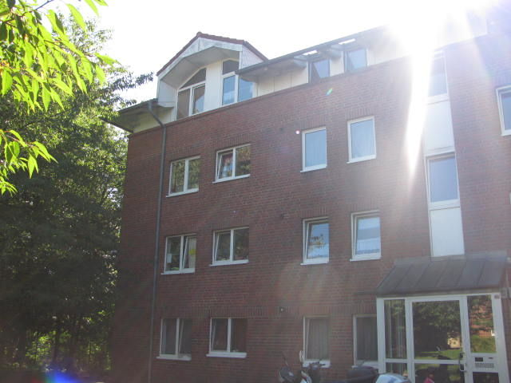

Die Tagespflegestelle liegt in der Saarbrückenstraße 31 in 24114 Kiel, auf der dritten Etage eines Mehrfamilienhauses. Die Wohnung bietet mit ihren 4 Zimmern und 80 qm ausreichend Platz für die Gruppe.
Die Zimmer der Wohnung:
In den Räumen der Wohnung ist das Rauchen grundsätzlich untersagt. Es sind alle Räume mit Rauchmeldern versehen. Ein vollständiger Erste-Hilfe-Kasten ist immer griffbereit. Zusätzlich ist ein Feuerlöscher in den Räumlichkeiten vorhanden.

In der unmittelbaren Nähe liegen weitere Mehrfamilienhäuser. Die Straße selbst ist verkehrsberuhigt. Am Gebäude liegt ein Spielplatz und fußläufig sind zwei weitere Spielplätze gut erreichbar. Damit kann ich den Kindern ausreichend Abwechslung bieten. Wir besuchen die Spielplätze täglich für circa 1,5 Stunden. Des Weiteren sind einige Geschäfte und größere Einkaufszentren in der Nähe. Diese werden von mir regelmäßig besucht, um den Kindern Abwechslung zu bieten aber auch um sie mit dem Straßenverkehr vertraut zu machen und das soziale Verhalten gegenüber Dritten zu fördern.
Die Betreuungsstätte ist mit dem Auto wie auch mit dem Bus gut erreichbar. In der Nähe befindet sich eine Haltestelle für Busse.
Es werden Kinder im Alter von 0 bis 3 Jahre in kleinen Gruppen von maximal drei Kindern betreut. Die Betreuung findet Montag bis Freitag, in der Zeit von 07:00 Uhr bis 16:00 Uhr statt. Nach Absprache kann die Betreuung auch außerhalb der regulären Zeiten stattfinden.
Meine Urlaubszeit beträgt sechs Wochen im Jahr davon, sind drei Wochen zusammenhängend in den Sommerferien. In dieser Zeit ist die Betreuungsstätte geschlossen. Die Urlaubszeit wird rechtzeitig zu Beginn eines Jahrs bekanntgegeben.
Falls ein Kind erkrankt, kann dieses, so lange die Erkrankung anhält, nicht weiter betreut werden. Aufgrund der erhöhten Ansteckungsgefahr innerhalb einer Gruppe muss das Kind bei Erkrankung abgeholt werden. Daher sind die Eltern dazu verpflichtet die Kinder innerhalb eines von mir gesetzten Zeitraumes abzuholen. Kinder mit Fieber, Durchfall oder Erbrechen können erst wieder betreut werden, wenn diese 24 Stunden ohne Medikamente beschwerdefrei und symptomfrei sind.
Falls ich erkranken sollte ist Betreuungsstätte in dieser Zeit geschlossen. Wenn jemand aus meinem Haushalt erkrankt, weise ich die Eltern rechtzeitig daraufhin, so dass diese selbst entscheiden können ob die Kinder in der Zeit betreut werden sollen.
Jedes Kind ist ein Individuum, welches eine Recht auf spezifische Förderung der Persönlichkeit hat. Daher bringt jedes Kind spezifische Begabungen bzw. Talente mit, welche gezielt gefördert und gefordert werden. So kann jedes Kind eine Identität, Selbstbewusstsein und Eigenständigkeit entwickeln. Daher begegne ich einem Kind genauso respektvoll und auf Augenhöhe, wie einem Erwachsenen. Durch einen respekt- und würdevollen Umgang mit dem Kind oder auch den Kindern wird ihnen die Chance eingeräumt, sich individuell zu Entfalten.
In der Arbeit mit den Kindern ist die Förderung der Partizipation etwas Grundlegendes. Die Förderung erfolgt dabei durch die Möglichkeit Entscheidungen zu treffen, Entscheidungsspielräume zu haben, Mitbestimmung, Probleme in der Gruppe zu lösen, Kompromisse einzugehen, Freunde frei zu wählen, Spiel- und Bastelmaterialien selbst bestimmen. Dabei werden soziale Kulturen mit einbezogen und die Kinder können selbst Regeln festlegen und diese kontrollieren. Daher eine Gesprächs- und Streitkultur entwickeln. Dabei bekommen die Kinder eine klare Struktur, in der sie sich entfalten können. Innerhalb eines klaren Regelwerkes mit Rechten und Pflichten werden die Kinder bestmöglich gefördert.
Ziel der pädagogischen Arbeit ist es, die sechs Bildungsbereiche zu fördern. Dabei sollen die Kinder spielerisch Erfahrungen sammeln aber auch gefordert werden um eine optimale Förderung des individuellen Kindes zu gewährleisten.
| Körper, Gesundheit und Bewegung |
|---|
| Bewegung in der Turnhalle, im Außengelände und im Wald, selbständiges An- und Ausziehen |
| Sprachen, Zeichen und Kommunikation |
| Buchbetrachtung, Lieder, Morgenkreis, Fingerspiel |
| Mathematik, Naturwissenschaft und Technik |
| Bauen und Konstruieren, Experimente, Sortieren |
| Kultur, Gesellschaft und Politik |
| Gesprächskreis, Feste feiern, Rollenspiele |
| Religion, Philosophie und Ethik |
| Aushandeln und Einhalten von Regeln, Zusammenleben in der Gruppe |
| Musisch-Ästhetische Bildung, Medien |
| künstlerisches Gestalten, Malen, Schneiden, Rollenspiele |

Spielen ist für die Entwicklung des Kindes sehr wichtig. Durch Malen und Basteln wird die Phantasie und die Kreativität des Kindes angeregt. Das fördert die Vorstellungskraft aber auch die Feinmotorik wird trainiert.
Das Vorlesen von Geschichten und Märchen fördert die Konzentration. Das Gehörte kann später nachgespielt oder gemalt werden.
Im freien Spiel üben die Kinder abgeschaute Alltagssituationen, verarbeiten erlebte Situationen oder gehörte Geschichten
Da die Kinder das Spiel selbst bestimmen, müssen sie auch die verschiedenen Wünsche selbstständig aufeinander abstimmen. Auf diese werde das Sozialverhalten und die Kompromissbereitschaft geschult.
Durch die Gesellschaftsspiele lernen die Kinder Regeln einzuhalten, richtig zu kombinieren und im Team zu arbeiten.
Bei Spaziergängen in der Natur können die Kinder ihre Umwelt erforschen. Sie lernen ihre Phantasie einzusetzen, anstatt vorgegebene Abläufe nachzuahmen.
Einmal die Woche besuchen die Kinder das Kinderturnen, unterstützt von einem professionellen Trainer, um so ihren Körper zu entdecken, ihre Gesundheit zu fördern und das Bewegung wichtig ist.
Neben den sich schnell entwickelnden Kontakten innerhalb unserer kleinen " Truppe ", gibt es auf den Spielplätzen immer wieder Begegnungen mit anderen Kindern und auch Kita Gruppen. Auf unseren Spaziergängen durch den Park und den kleinen Ausflügen treffen wir viele interessante Menschen und Tieren. Bei all diesen Begegnungen können unsere kleinen Erfahrungen, ja mitunter auch Grenz- Erfahrungen sammeln.
Die Eltern werden regelmäßig über alle Fortschritte ihres Kindes informiert. Für jedes Kind wird eine schriftliche Dokumentation über Verhalten und Lernfortschritt festgehalten. Zusätzlich wird, falls darum gebeten wird, eine Fotodokumentation erstellt.
Alle Mahlzeiten werden gemeinsam im Essbereich eingenommen. Für jede Woche erstelle ich einen Speiseplan, bei dem ich versuche auch auf die Wünsche und Vorlieben der Kinder einzugehen. So kann ich auf Vorgaben der Eltern bei Unverträglichkeiten oder Allergien eingehen. Selbstverständlich ist in Absprache mit den Eltern auch die Fortsetzung der Ernährungsumstellung möglich.
Ein gutes Verhältnis zwischen Tagesmutter und Sorgeberechtigten ist sehr wichtig. Bitte sprechen Sie deshalb auch kleine Probleme, Konflikte oder Bedenken sofort offen an.